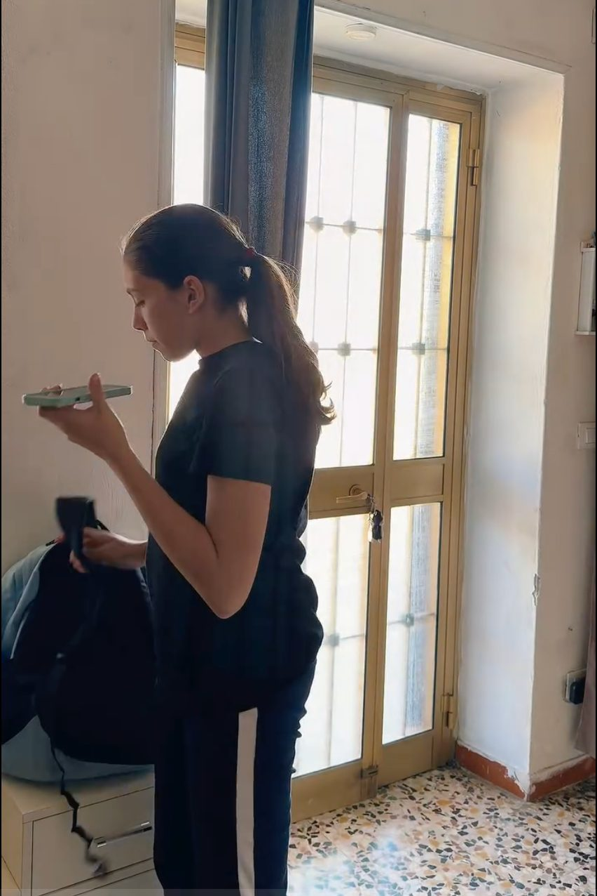
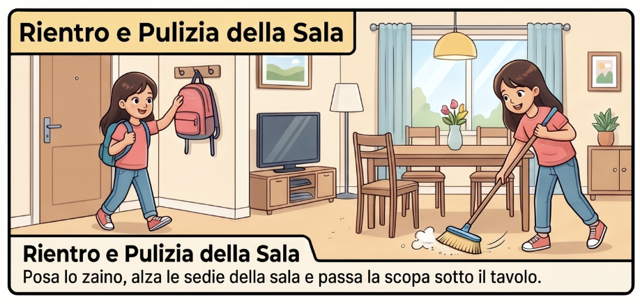
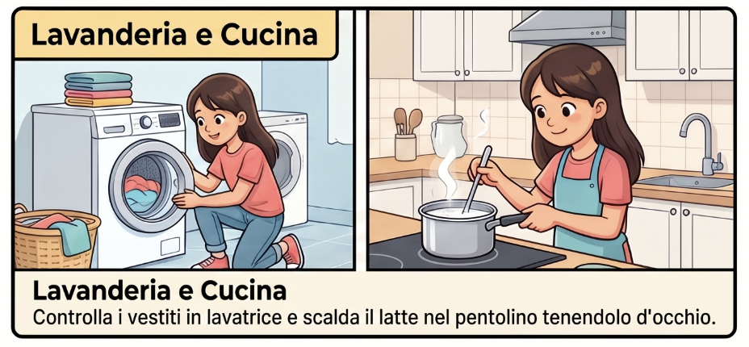
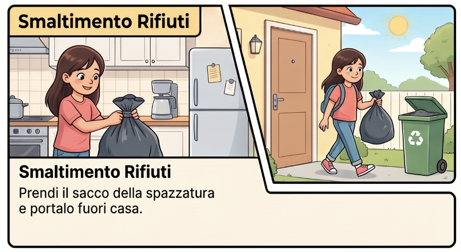

Parti da qui: guarda la scenettaLa voce del papà è nel video: alza il volume
Il caso Eleonora
Hai visto bene: Eleonora ha fatto tutto quello che il papà le ha chiesto al telefono. Nessuna istruzione saltata. Eppure il latte è finito in pentola col cartone, il sacco della spazzatura è volato fuori dalla porta e per spazzare si è infilata sotto il tavolo.

Eleonora ha eseguito ogni parola, una per una. Eppure nulla è andato come sperava il papà. Dove si è inceppato il meccanismo?
L'indagine sulle parole
Rimettiamo in fila le quattro istruzioni del papà, come farebbe un investigatore con gli indizi. Per ciascuna, la domanda è una sola: dove si nascondeva la trappola? Tocca la risposta che ti convince.
I cinque ingredienti di una consegna chiara
Una buona consegna non è una frase gentile: è uno strumento di precisione. Chi la legge deve poterla eseguire senza doverti chiedere nulla. Ecco i cinque ingredienti che alle istruzioni del papà mancavano.
1 · Azione precisa
Quale gesto, esattamente?
2 · Oggetto definito
Che cosa? Quale? Quanto?
3 · Modo e strumenti
Come? Con che cosa?
4 · Ordine e tempo
Prima o dopo? Quando? Per quanto?
5 · Risultato atteso
Come capisco che è fatto bene?
Le stesse richieste, dette bene
La lista del papà raccontata per immagini, ambiente per ambiente, con dentro i cinque ingredienti. È così che Eleonora avrebbe capito al primo colpo.

Rientro e pulizia della sala
Posa lo zaino, alza le sedie della sala (capovolte sul tavolo) e passa la scopa sotto il tavolo.

Lavanderia e cucina
Controlla i vestiti in lavatrice e scalda il latte nel pentolino, tenendolo d’occhio finché non bolle.

Smaltimento rifiuti
Prendi il sacco della spazzatura e portalo fuori casa, dentro il bidone.
Apri il diario e scegli una consegna vera che hai ricevuto questa settimana (di qualunque materia). Dalle un punteggio da 0 a 5: un punto per ogni ingrediente presente. Scrivi qui sotto la consegna e il punteggio che le hai dato.
Il banco del traduttore
L'indagine ha svelato il trucco preferito delle trappole: la parola a doppio senso. Funziona solo se chi ascolta conosce già il significato nascosto; presa alla lettera, combina disastri. Su questo banco ne arriva una fila: prima i modi di dire di tutti i giorni, poi le parole che con la tecnologia cambiano significato («apri la finestra», «salva il documento»…). Il tuo compito: tradurle in consegne chiare, che anche Eleonora eseguirebbe al primo colpo. Usa verbi concreti e di' che cosa deve succedere davvero.
L'officina: ora scrivi tu
È il momento di riprendere la domanda messa da parte: si può scrivere una consegna a prova di Eleonora? C'è un solo modo per scoprirlo. Riscrivi il messaggio del papà come un elenco di istruzioni scritte: Eleonora farà esattamente ciò che scrivi, né una parola in più, né una in meno.
Collaudo: rileggi con gli occhi di Eleonora
Spunta una casella solo se, rileggendo, la risposta è davvero sì.
Il laboratorio: da ambigua a chiara
Dieci situazioni verosimili — a casa, a scuola, con la tecnologia — e dieci consegne dette di fretta, tutte fraintendibili. Scegline una, leggi come potrebbe finire se qualcuno la eseguisse alla lettera, poi riscrivila tu così chiara che nessuna Eleonora possa inciamparci. Qui niente aiuti a lato: gli attrezzi ormai li hai in mano.
Ingredienti da curare in particolare:
Scegli la tua riscrittura migliore e scambiala con un compagno: lui la esegue a mimo, alla lettera, davanti a te — proprio come Eleonora. Ogni volta che è costretto a fermarsi o a inventare, hai trovato un punto da riscrivere. Poi vi scambiate i ruoli.
La sfida della bottega
Ultima prova: qui non scrivi una consegna, la esegui tu — come Eleonora. A sinistra la consegna, a destra il tuo foglio di lavoro. Leggila e mettila in pratica; poi premi «Consegna finita».
Chiudiamo il cerchio (e svuotiamo la tasca)
Ricordi la domanda tenuta in tasca? Dove si è inceppato il meccanismo? Ora puoi rispondere da autore, non da spettatore: non nelle orecchie di Eleonora, non nella fretta del papà. Il punto debole era la consegna: verbi vaghi, modi di dire, pezzi mancanti. Tu ora quei pezzi sai riconoscerli — e sai rimetterli al loro posto.
La prova del nove: caccia alla trappola
A parole, però, è facile. Questa consegna non l'hai mai vista: è appena «arrivata sul diario». Leggila da autore e tocca le cinque parole-trappola che manderebbero Eleonora fuori strada — ce n'è una per ognuno dei cinque ingredienti.
Trappole trovate: 0 su 5
Nero su bianco: le tre domande finali
1Che cosa ho capito?
Qualcosa che prima di oggi non sapevi (o non sapevi di sapere).
2Come ci sono arrivato/a?
Quale momento ti ha aperto gli occhi: il video, l'indagine, l'officina, il laboratorio?
3Che cosa cambierò?
La prossima volta che leggerai una consegna, che cosa farai di diverso?
Niente viene salvato da questa pagina: quello che hai scritto vive qui e nel tuo quaderno. Copialo prima di chiudere.
La verifica finale
Un ultimo gesto da bottega: controlla di aver attraversato tutte le tappe. Premi il pulsante e vedrai le spunte del tuo percorso e il tempo che ci hai messo, da quando hai dato la prima risposta. Niente viene salvato o inviato: è una verifica solo per te.